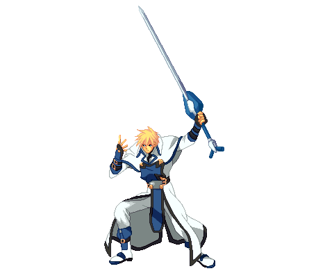
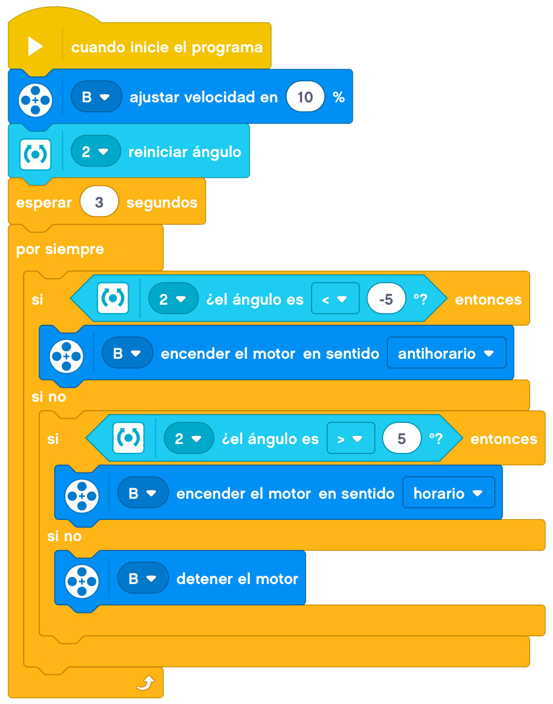
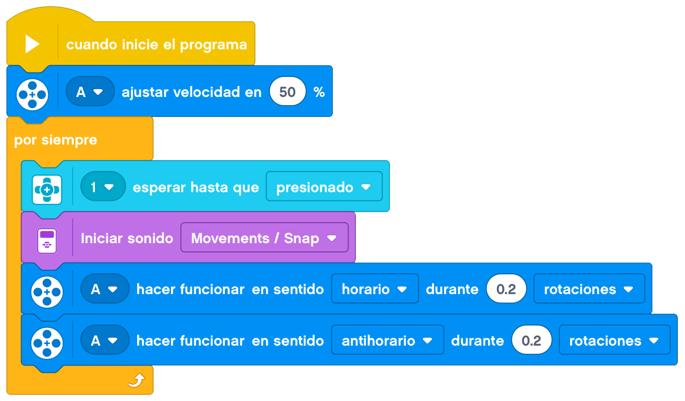

En el tema de hmoy construiremos un guerrero.

Crearemos un guerrero que girará sobre sí mismo y dará espadazos con uno de sus brazos.
Le añadiremos un joystick con el sensor de giro para que gire hacia un lado y el otro y un botón para
accionar la espada.
A continuación, mostraremos un ejemplo de construcción de un guerrero.
Le añadimos el cableado y tendríamos al guerrero terminado.
En este caso la programación también se complica un poco. Podría ser de esta forma.
Para el giro sobre sí mismo, lo haremos depender del balanceo del sensor de giro. Después de resetearlo, si es
positivo girará hacia un lado y si es negativo lo hará hacia el otro lado.

Para el movimiento de la espada, lo haremos al pulsar el botón.

Nuestro proyecto terminado funcionaría de la siguiente forma.